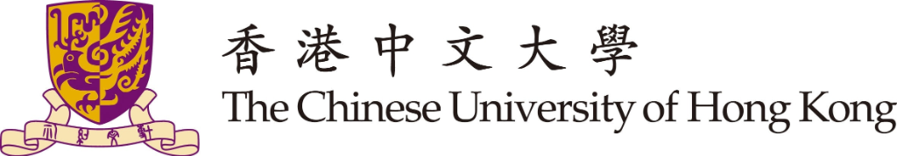
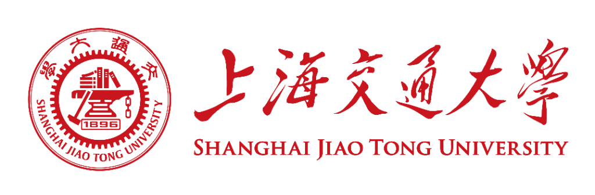
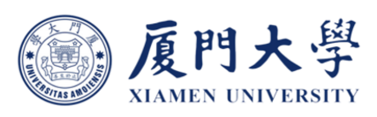
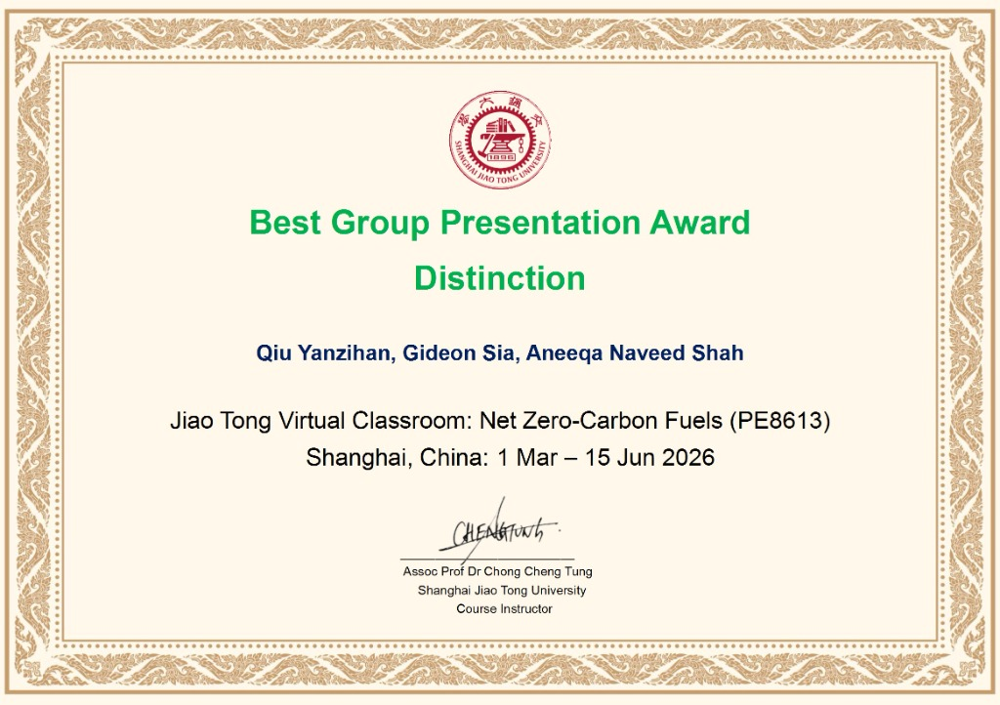
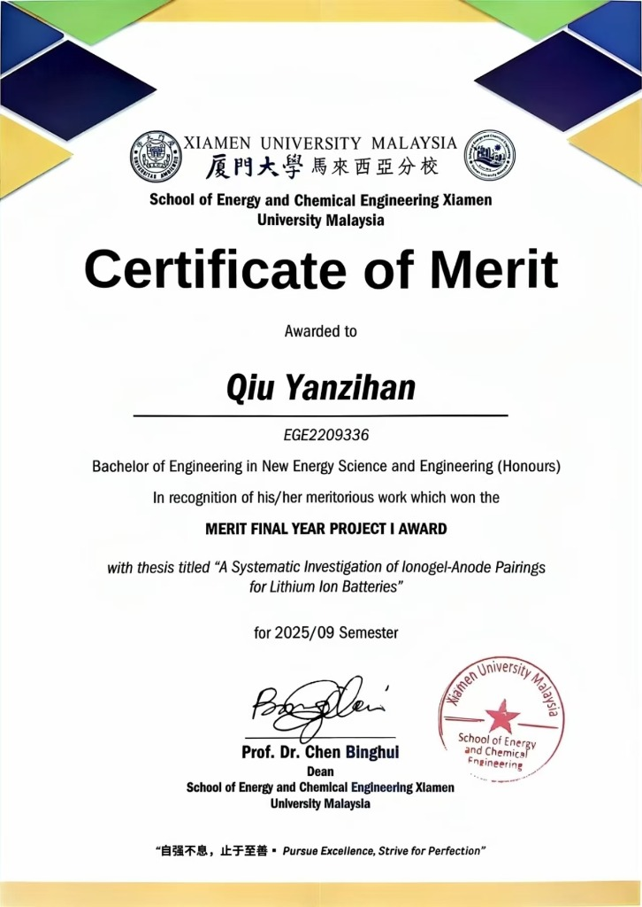

教育经历
香港中文大学 (深圳) QS 18

人工智能 | 深圳校区人工智能学院
- 已获正式录取，研究方向聚焦 AI for Science、科学知识工程与领域模型应用
上海交通大学
985211
净零碳燃料 | Low Carbon-UK College
- 作为项目组长参与“Net Zero-Carbon Fuels”课程，并在最终的小组展示中获得最佳成绩（Distinction）。
厦门大学
985211
新能源科学与工程 | 马来西亚分校能源与化工学院
- CGPA: 3.50 / 4.00
- 主修课程: 材料科学基础（A）、有机化学（A）、微积分（A）、AI与仿真（A）、通用物理与实验（A）、增材制造（A）、能源项目管理（A）
- 荣誉: 2022-2023学年三等奖学金（Top 30%）、优秀一阶学术论文（A等满分）
科研经历
面向锂电池正极材料的科学知识抽取与 Scientific LLM 可靠性评估
香港中文大学 (深圳) | 导师：张明建、李舜宁教授
- 【Multi-Agent科学数据质检】面向16,000+篇锂电正极候选文献，受模型对抗辩论机制启发，独立设计4-Agent多视角相关性判读流程，从正/反判据与证据审查角度交叉验证，一致结果自动决策、分歧样本升级裁决；NoSure（不确定）样本由48条降至4条（-91.7%），显著降低人工复核工作量。
- 【错误归因与Pipeline重构】采用Error-driven方式持续迭代至V31，通过随机抽检独立定位References污染、背景材料误识别、非标准化学标签等关键根因；重构LLM + Rule“关键段落定位→上下文筛选→模型判读”流程，使单篇平均输入Token降低72.4%；在400个随机样本上将判读正确率由47.2%提升至98.5%，幻觉率由5.7%降至测试集未观察到幻觉。
- 【科学一致性与可验证Agent】独立构建化学计量、化学式格式及合成工艺规则校验，对合成动作与多温度过程进行结构化标准化；结合人工随机复核与高性能LLM交叉核对形成“自动判读-科学校验-错误归因-反馈迭代”质量闭环，并面向Evidence-grounded Scientific Agent构建可追溯知识底座，探索检索、专业工具调用与科学一致性验证协同的材料问答框架。
锂电池离子凝胶电解质优化与负极兼容性研究
厦门大学马来西亚分校 | 导师：范能平教授
- 【多变量实验与性能表征】围绕LiTFSI浓度、UV固化时间、VC含量及膜厚开展配方优化，结合EIS、GCD、FTIR、燃烧与机械测试，确定0.75 M / 5 wt% VC / 30 s / 0.2 mm最优组合
- 【负极兼容性验证】比较Graphite、MCMB、Hard Carbon与Silicon负极循环性能；Graphite第120圈容量231.8 mAh g⁻¹，第100-120圈平均库仑效率99.4%，识别不同负极体系的适配差异；相关成果已进入论文撰写阶段
Transformer架构在锂电池寿命预测中的应用研究
厦门大学 | 导师：郑世胜、李剑锋教授
- 【模型复现与可靠性评估】独立处理NASA与CALCE电池数据，复现Transformer类预测模型并以CNN为基线，使用RMSE、MSE与R²定量评估；进一步分析跨工况泛化、数据泄漏、预测不确定性与模型失效场景。
- 【综述研究与论文产出】系统回顾164篇文献并深入分析25篇核心研究，从架构、输入特征、泛化能力、不确定性量化与部署约束等维度构建比较框架；第一作者综述返修稿已提交至IOP Publishing旗下期刊《AI for Science》
热工参数测量与表面温度动态校正研究
厦门大学&福建中烟集团 | 导师：张尧立教授
- 【实验-模型验证】搭建T型热电偶-红外测温联合平台，完成20+组实验与10万+数据点分析，构建动态校正模型使测温精度提升32%；主导实验框架与模型设计，相关论文以第二作者撰写中。
实习经历
冠宇电源有限公司
动力电池研发中心
- 【模型构建与实验验证】基于Ansys Fluent开展动力电池热失控及电芯/MOS温度场建模，结合网格敏感性分析、边界条件校准与实验对标，将关键工况仿真误差控制在±15%
- 【跨平台模型复核】独立使用COMSOL复现同类模型，通过参数与网格优化使部分工况计算效率提升16%-22%、关键温度预测误差降低5%-10%。
美的集团股份有限公司
楼宇科技研发中心
- 【AI Workflow与数据决策】基于内部AI平台搭建工单创建、资料归档与数据分析一体化Workflow，提升任务流转、数据复用与信息检索效率；围绕温控系统与控制逻辑开展Benchmarking，输出结构化竞品分析，支撑产品方案迭代与决策。
- 【系统建模与方案验证】参与165 kW热泵开发并搭建一维系统模型，完成核心部件多工况标定及20+修正系数校准，将综合误差控制在5%以内；用于零部件选型与方案预评估，仿真显示约8%节能潜力，预计可减少50%以上重复测试。
专业技能
- Python、LLM API、Prompt Engineering、Multi-Agent、Adjudication、Data Labeling；具备测试集构建、Scientific LLM Evaluation、错误归因、Human-in-the-loop质量控制及LLM + Rule流程设计实践。
- 熟悉Transformer模型评估，掌握Ansys Fluent、COMSOL、OriginLab及EIS、GCD、FTIR等实验/分析方法，具备材料、电化学与能源工程交叉研究基础。
- 熟悉Web of Science检索、科学文献批处理、结构化信息抽取与英文科研写作，具备跨模型/实验结果复核与科学合理性判断能力。
- IELTS 6.5 (L:7, R:7.5, W:6.5, S:6)
- 具备较强的自主研究与问题拆解能力，习惯从异常样本和科学证据出发开展错误归因（Root Cause Analysis），并通过随机抽检与量化评测验证改进效果；重视模型输出的可验证性、可复现性及边界条件，具备材料/电化学与AI交叉研究背景，能够将领域问题转化为可执行判据与自动化流程，并独立推进复杂科研任务及跨团队协作。
项目与荣誉
最佳课程展示奖
上海交通大学 Net Zero-Carbon Fuels
- 作为项目组长参与“Net Zero-Carbon Fuels”课程，并在最终的小组展示中获得最佳成绩（Distinction）。

MERIT FINAL YEAR PROJECT I AWARD
厦门大学马来西亚分校
- 论文题目: "A Systematic Investigation of Ionogel-Anode Pairings for Lithium Ion Batteries"
